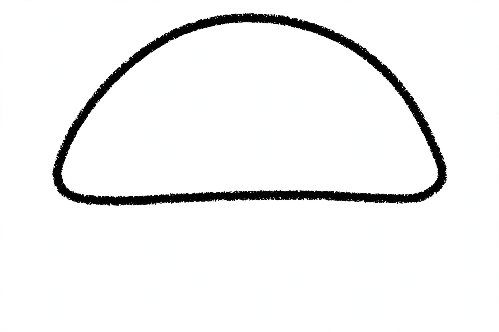
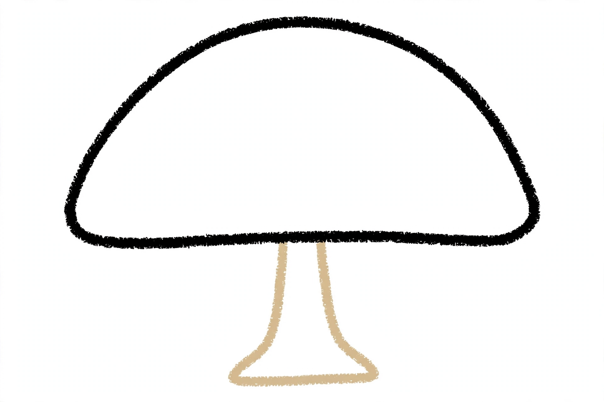
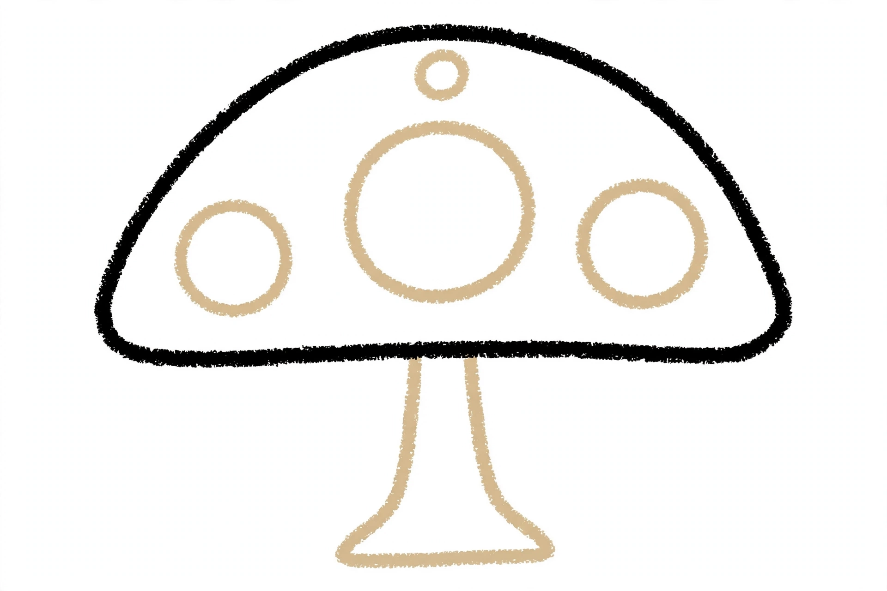
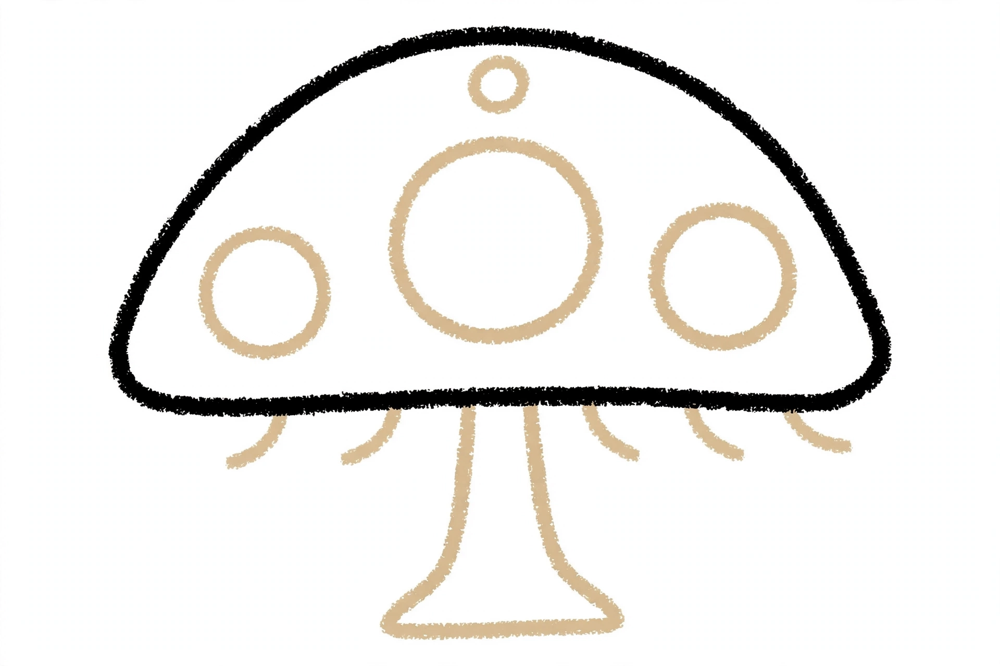
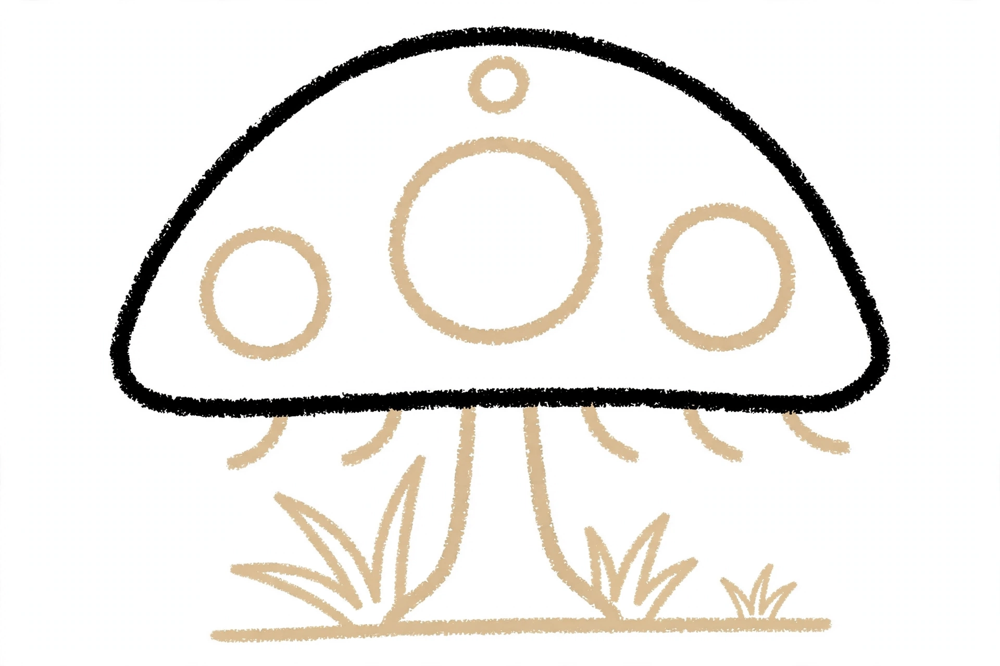
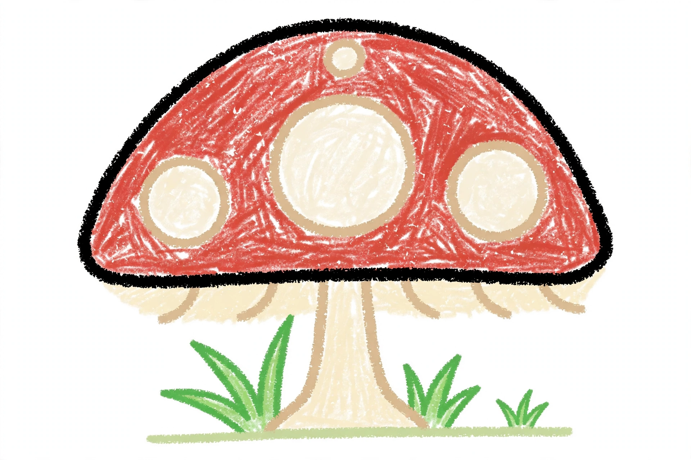

Mushroom Drawing for Kids How to Draw A Mushroom in 6 Easy Steps
Quick Answer
Draw a mushroom in six easy steps: a wide half-dome cap with soft round corners, one thick stem hanging from the middle, four round spots on the cap, and five little gill lines hiding underneath. Add a ground line with three grass tufts, then color the cap warm red with creamy white spots. Made for ages 3 and up — print free.
At a Glance
- Subject: How to draw a mushroom
- Ages: 3+
- Steps: 6 steps
- Time: ~15 min
- Difficulty: Easy
- Supplies: Paper, crayons
This mushroom is built from two shapes on purpose — one big half-dome cap and one thick little stem — so it finishes as a toadstool instead of a blob on a stick. The four spots at step 3 and the hidden gills at step 4 are what seal the deal.
✏️ Draw Your Mushroom in 6 Easy Steps
One step per box — this step by step mushroom drawing shows each new part in a different color so kids can see exactly what changed.
Step 1: The Cap

Draw one big, wide half-dome in the top half of your page — round on top, with a straight flat line across the bottom, and soft round corners where the dome curves down to meet the flat line. This is the mushroom's cap.
Step 2: The Stem

Draw one thick stem hanging down from the middle of the cap's flat line. Make it a little narrower at the top and wider at the bottom, like a tiny tree trunk.
Step 3: The Spots

Draw four round spots on top of the cap: one big spot in the middle, one medium spot on the left, one medium spot on the right, and one small spot near the top. Keep all four spots inside the cap.
Step 4: The Gills

Under the cap's flat line, draw five short curved lines — these are the gills hiding underneath the cap.
Step 5: The Ground and Grass

Draw one flat ground line under the stem. Then add three grass tufts sitting on the line: one on the left of the stem, one on the right, and one smaller tuft further right.
Step 6: Color It In

Color your mushroom! Warm red for the cap, creamy white spots, soft cream for the stem and gills, and fresh green for the grass tufts. Great drawing!
📊 Mushroom Drawing by Age
Every age can join in — just adjust the job.
| Age | What they can do | Tip |
|---|---|---|
| 3-4 | Draw the big cap dome and color the finished mushroom red. | One big half-dome is the whole trick — a wide, round cap already reads as a mushroom before any details land. |
| 4-5 | Add the thick stem, the four cap spots, and the ground line with its grass tufts. | Spots stay inside the cap, always — a spot that spills over the cap's edge stops looking like a spot and starts looking like a spill. |
| 6+ | Finish all six steps, including the five gill lines hiding under the cap. | Count the spots and gills out loud together as they draw — four spots, five gills — it's a built-in counting game. |
🖨️ Download Your Free Mushroom Drawing Printable
The printable lays out all 6 steps one per box, big enough for little hands — kids draw right alongside each step.
⬇️ Open Free Printable 🖨️ Print🎁 Free printable for ages 3+
🍄 Mushroom Forest Floor Page
Give your mushroom a forest floor: draw fallen leaves and a log at the sides, ferns and more grass along the ground line, and raindrops falling if your mushroom likes the rain. Then decide together what kind of mushroom this is: a fairy-ring mushroom where the fairies dance, a cozy shelter for a beetle family, or the tallest toadstool in the forest. Write one sentence about the mushroom under the drawing (or dictate it for a grown-up to write).
What You'll Need to Draw A Mushroom
All you need is a pencil, an eraser, and crayons or markers. For the colors in the tutorial, have warm red ready for the cap, creamy white for the spots, soft cream for the stem and gills, and fresh green for the grass tufts. Regular printer paper or a sketchbook both work.
What They're Learning
This tutorial practices half-dome curves and straight lines, symmetry down a center stem (a spot on each side, grass on each side), and counted repetition — four spots and five gills. Kids also work on placement, hanging the stem from the middle of the cap's flat line, and on the observation skill of peeking underneath a familiar shape to draw the hidden parts most people forget.
Make It Yours
Try a whole fairy ring of mushrooms drawn with the same steps in different sizes, a blue or purple spotted mushroom, a mushroom house with a tiny door in the stem and a round window in the cap, or a night scene with fireflies glowing around the grass.
🛒 Our Favorite Drawing Supplies
These are the supplies we reach for in our own home — washable (because kids), quality paper, and enough colors to avoid fights.
As an Amazon Associate, MomYouNeedThis earns from qualifying purchases — at no extra cost to you.
💡 Mushroom Drawing Tips for Parents
Step 1 does the heavy lifting: the cap is one wide half-dome with soft round corners where the curve comes down to meet the flat line. Pointy corners make the cap look like a roof or a hat; round corners make it read as a soft, growing mushroom. Keep the dome wide, too — a tall, narrow cap turns into an umbrella.
At steps 3 and 4, count together: four spots, all inside the cap, then five gills hiding underneath. The gills are the detail most kids skip, and they're the one that makes grown-ups say "oh, it really is a mushroom." If a spot goes missing or a sixth gill sneaks in, that's fine — but counting first is what makes them look designed rather than scribbled.
🍄 Mushrooms in the Real World
Real mushrooms are the fruit of a fungus that mostly lives underground as a web of tiny threads. The part we draw — cap, stem, and gills — pops up after rain to scatter spores, which drift off the gills and start new fungi. The red mushroom with white spots in this tutorial is the classic storybook toadstool (the fly agaric), and real ones are poisonous — wild mushrooms are strictly look-don't-touch.
Mushrooms quietly hold forests together: many grow on dead wood and old leaves and break them down into food for the trees, and some even trade nutrients with tree roots underground. When your child finishes the drawing, ask which fact their mushroom shows best: the spots, the hidden gills, or the forest floor it grows from.
✋ Warm-Up: Half-Domes and Short Curves
Before the real drawing, warm up with the two strokes this mushroom is built from. Fill a scrap page with wide half-domes — round on top, flat across the bottom, with soft corners — then practice rows of short curved lines, five in a row, over and over: those are the gills, and they show up five times in the finished drawing.
Warm-ups are also where mistakes get cheap. If a dome comes out pointy or a curve wobbles, nobody cares — cross it out and draw the next one. Remind your child that the same rule works in the tutorial: draw lightly, and if one part goes sideways, fix just that part. The rest of the mushroom is already fine.
📖 Give Your Mushroom a Story
A finished mushroom deserves a name and a plan. Ask your child: what is this mushroom's name, and who shelters under its cap when it rains? Have them dictate one or two sentences and write them under the drawing in your best handwriting — a caption turns a practice page into a story page, and kids love reading their own words back.
Keep the page and start a small collection. A folder of finished drawings becomes a storybook your child 'wrote' — and a reason to pick the next subject. Keep the forest stories going with how to draw a leaf — the mushroom's forest-floor neighbour — or how to draw a flower, which grows in the same grass.
❓ Mushroom Drawing FAQs
What is the easiest way to draw a mushroom?
Start with one big wide half-dome for the cap, with soft round corners and a straight flat line across the bottom. Hang one thick stem from the middle of that line, wider at the bottom. Then add four round spots on the cap and five short gill lines underneath. Big dome plus spots plus hidden gills is the mushroom recipe.
What age is this mushroom drawing for?
It's made for ages 3 and up. Younger kids can draw the cap, the stem, and the coloring, while older kids handle the four spots, the five gills, and the grass tufts themselves.
What supplies do we need?
A pencil, an eraser, paper, and crayons or markers. For colors you'll want warm red for the cap, creamy white for the spots, soft cream for the stem and gills, and fresh green for the grass.
Is the printable really free?
Yes — every printable on MomYouNeedThis is 100% free, including this mushroom drawing tutorial. There is no signup, no email, and no catch — just download, print, and draw.
How do I print it?
Open the PDF and choose Print, then set the scale to 100% (sometimes called Actual Size) so the steps print at full size. The tutorial is designed for regular US Letter paper, and plain printer paper works perfectly.
What makes a mushroom look like a mushroom?
The spotted cap and the hidden gills. A dome on a stem could be a lamp or an umbrella, but four round spots on the cap and five little lines underneath it say mushroom at a glance. Keep the cap's corners soft and round too — pointy corners read as a roof, not a toadstool.
How many spots and gills does the mushroom have?
This mushroom has four spots on its cap — one big, two medium, and one small — and five gill lines underneath the cap. Counting them as you draw them is half the fun.
Can my mushroom be a different color?
Yes — try a blue mushroom with white spots, a purple one, or a whole rainbow fairy ring. Keep the round-cornered dome, the spots, and the gills, and it stays a mushroom in any color.
📚 Keep Exploring
- ✏️ All 76 Drawing Tutorials 76 free step-by-step drawing tutorials for kids.
- 🐾 Animal Coloring Free animal coloring pages for kids.
- ✏️ Drawing Practice Free printable drawing pre-writing worksheet for toddlers.